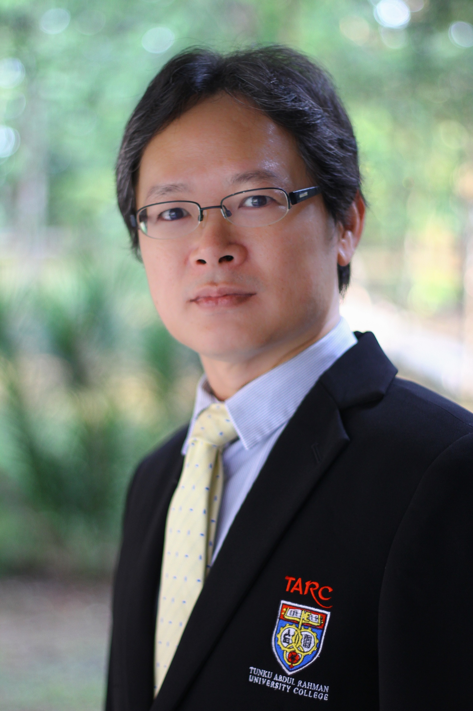
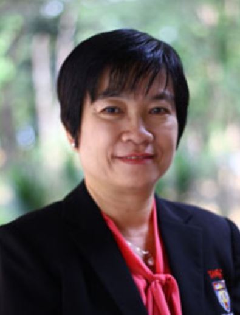

Research
Centre for Computer Networking and Cyber Security (CCNCS)
Led by Dr Wong Thein Lai

Introduction
Centre for Computer Networking and Cyber Security aspires to be a network infrastructure design support and consultancy service provider, a catalyst for leading-edge research activities related to computer networking and cyber security and a contributor to community awareness and education on cyber security.
What we do ?
- Catalyse computer networking and cyber security related research activities and encourage innovations and creativity among students and lecturers, ultimately to explore new ideas and research, and to nurture researchers in the field of computer networking and cyber security.
- Conduct trainings and workshops for professional development in the field of computer networking and cyber security.
- Mentor students in the national or international competitions in the field of computer networking and cyber security.
- Bring students and/or lecturers closer to the industry by working closely with the industry to provide real-life industrial exposure and research opportunities.
- Promote awareness on cyber security for various communities through partnerships with private sectors.
- Provide network infrastructure design and setup support or consultancy for third parties (in-house or industry projects, other IHLs, etc).
What we aim for ?
This centre aims to create a platform for students and lecturers to do research and consultancy work in the area of computer networking and cyber security, and to create interest and provide relevant industrial skills related to computer networking and cyber security among students.
Research Group - Laboratory B223, B224, B225, B227 and B228, Block B, TAR UMT Main campus

Computer Networking Group
Led by Ts Chok Len Mooi

This research group aims to create a platform for students and lecturers to do research and consultancy work in the area of computer networking, create interest and provide relevant industrial skills related to computer networking among students.

Cyber Security Group
Led by Ts Lim Shen Huoy
This research group aims to create a platform for students and lecturers to do research and consultancy work in the area of cyber security, create interest and provide relevant industrial skills related to cyber security among students.
Achievement in the past
• Designed and implemented an industry grade research network infrastructure to provide support for Smart Campus and Industry 4.0 applications, and various industrial projects development.• Received internal grant to conduct research for secure data sharing framework for industry 4.0.
• Conducted Hyperledger Blockchain workshop for students to expose students with blockchain technology.
• Provided train-the-trainer workshops to academics by TAR UMT lecturers who are the CISCO Instructor Trainer Qualified.
• Trained students for computer networking related competitions and achieve outstanding achievement
• TAR UMT Internal grant in the area of information hiding from June 2017 to May 2019.
• Prepared students to go for CISCO Certified Network Associate (CCNA) and CompTia Security+ professional certifications before graduation.
Projects/Research Activities - Recent Work

Design and setup of TAR UMT research network infrastructure
Under this project, Computer Networking Group is designing and implementing an industry grade research network infrastructure that interconnects various research facilities in the main campus and branches to provide support for Smart Campus and Industry 4.0 applications, various industrial projects development. With the setup of this infrastrcture, students and researchers are given the opportunity to participate in these initiatives which will provide them valuable hands-on experience and make their learning experience a truly holistic education.

Secure data sharing framework for Industry 4.0
Industry 4.0 is focusing on the digital vertical integration of the manufacturing industry. However, the management of data across different verticals (horizontal integration) is also important in order to unleash the value of data held by companies for data economy. To enable secure data sharing, designing and constructing an infrastructure for secure data exchange is imperative. This project involves designing and constructing a framework that allows secure and trusted data sharing while ensuring data interoperability and maintaining data sovereignty for data owners.

QoE-aware application mapping and energy-aware module placement in fog computing
Fog computing is one of the vital and potential solutions for Internet of Things in close connection with things and end users. Due to the heterogeneous and distributed characteristics, finely distribute the task with computation offloading is a challenging task. Besides, developing an efficient QoE-aware application mapping policy is also challenging due to the different user interests. Other than that, the energy consumption would usually increase after such algorithm and policy are implemented. This research aims to propose a solution which is able to improve the performance in terms of execution time and network usage as well as keeping the energy consumption at an optimal level.

LoRa-based IoT system for plantation monitoring
The scope of the LoRa project is to transmit data collected by sensors in a plantation and transmits the data to the cloud. This project uses a node with a soil moisture sensor, temperature sensor, humidity sensor and a Night Vision Pi Camera that collect data directly from a plant, and then transmit the sensor data to the LoRa gateway which can convert the data to a readable format and further transmit the data to a cloud. Other IOT devices used include Raspberry Pi 4B, IoT Lora Raspberry PHat and LoRa gateway. The system provides a user-friendly GUI to alter the value of the threshold for each of the sensor (e.g. max/min of temperature) and allows to update the time interval for every sensor on any platform whenever connected to the Internet. The GUI provides visualization for the user, and allows the user to view the notification or warning if the threshold is met. With this information, the plantation owner can have firsthand information about their crops and make the right decision for their crops.
Environmental Sustainability Publications
1. LOW CHOON KEAT. QoE-Aware Application Mapping and Energy-Aware Module Placement in Fog Computing + Offloading. SDG7,11,13
Contact
For reasearch collaborations/consultation requests, please contact wongtl@tarc.edu.my.